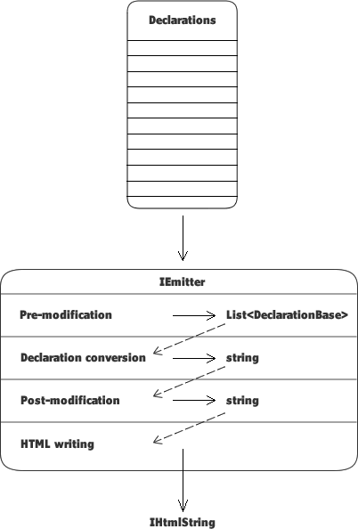

SuperScript
This documentation is still being written. Please bear with us while we complete this documentation.
Modifiers
Modifiers refers to a family of classes which are employed by an emitter to modify the declarations prior to the output being emitted.
Each type of modifier is implemented at a different stage of the emitter pipeline. Consequently, a different form of the declarations is made available to each type of modifier.
The above image shows that each type of emitter runs at a different stage in the emitting process and is passed the output of the previous stage.
Processing Declarations
The emitter pipeline offers four opportunities to modify the client-side form of the emitter-specific collection of declarations:
-
CollectionPreModifierThe first stage in the emitter pipeline is passed the raw, currently-unmodified collection of
DeclarationBaseobjects, and returns a collection ofDeclarationBaseobjects.Read about the
CollectionPreModifierhere. -
CollectionConverterThe second stage in the emitter pipeline takes the output from the first stage, a collection of
DeclarationBaseobjects, and uses the internal logic of the specific implementation ofDeclarationBaseto convert this server-side object into its client-side form.The output of this stage is a string consisting of the concatenated output from all instances of
DeclarationBasepassed to this emitter.Read about the
CollectionConverterhere. -
CollectionPostModifierThe next stage in the emitter pipeline takes the output from the second stage and offers the opportunity to modify the client-side form of the declarations passed to this emitter.
An example of the advantage which this stage offers is the possibility to minify JavaScript or to pre-compile HTML templates.
Read about the
CollectionPostModifierhere.
The final step implemented by an emitter uses an instance of an HtmlWriter to write
the output to the webpage. In actuality, this still offers the opportunity to modify the output.
-
HtmlWriterThe
HtmlWriteris passed a string and returns anIHtmlString.However, this stage offers the opportunity to write the passed string to one location and write out something entirely different to the emitting location.
For example, this stage could write the passed string to the local file system as a *.js file, then write a
<script src="…">tag to the webpage which references the created *.js file.Read about the
HtmlWriterhere.
What Next?
Read about pre-conversion modifiers here.
Read about collection converters here.
Read about post-conversion modifiers here.
Read about HTML writers here.